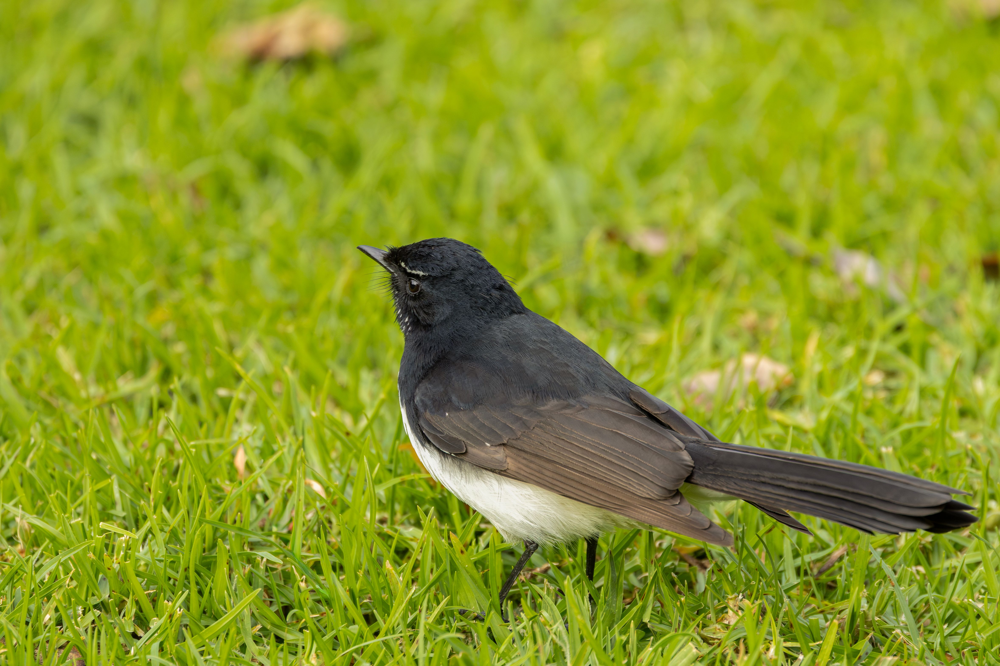

The Willie Wagtail is a familiar black-and-white Australian fantail with a long rounded tail and a distinctive white eyebrow. Despite its name, it is not a true wagtail like the Eurasian species of the family Motacillidae. Instead, it belongs to the fantail family. Willie Wagtails are energetic birds that frequently chase insects through the air, often returning to a low perch between flights. They are highly adaptable and can live in woodland, farmland, wetlands, parks and gardens. Their cheerful appearance and active behaviour make them one of the easiest Australian birds to notice. They are also known for their varied songs and bold behaviour around other birds.